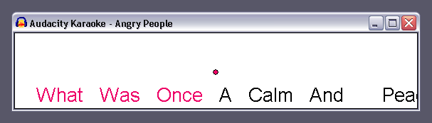

Karaoke
- Accessed by:
The Karaoke... command is enabled whenever you have at least one label track. If you have multiple label tracks, it uses only the first one.
The command brings up the Karaoke window, which displays the labels in a "bouncing ball" scrolling display. You can select a playback start point in the main tracks window and the Karaoke window will start from there.
- 
Audacity automatically puts a space between words, so you do not need to put them in your labels.
You may want to split up lyrics such that the ball bounces per syllable rather than just for the whole word. To do this, create a label for each syllable, and end each with a hyphen ("-"), except the last syllable. For example, "Aud-" "a-" "ci-" "ty". The hyphen tells Audacity to not put a space between the syllables, as it does between words. Note there may still be space between the syllables, depending on how far apart they are in the timeline and the size of the Karaoke window.